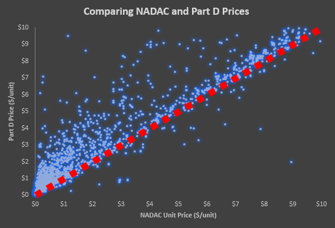
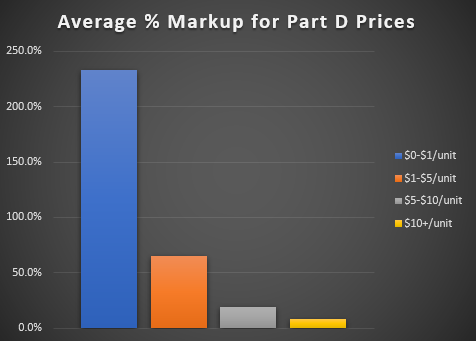
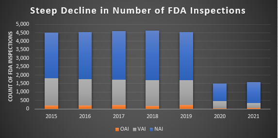
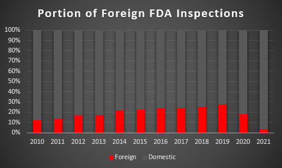

Zhengrong says baseline against logistic regression, always aim to beat the baseline
Dosage form shouldn't be used
COVID-19 forced everyone to soul search on the definition of essential. Is this business trip essential? Is visiting my family essential? We even defined "essential workers". Medicines are no different. Everyone in the healthcare community has an essential medicines list. How do they all compare?
Three publicly available datasets provide pricing information on
more than 42% of drug products sold in the United States.
1) National Average Drug Acquisition Cost (NADAC). Based on a weekly
survey of pharmacies, this dataset covers over 29% of all drug
products sold in the United States. While AWP (Average Wholesale
Price) represents a published price for the drug based on data from
manufacturers, NADAC reflects actual monthly purchasing trends from
transacted data.
2) Medicare Part B. The smallest of the three datasets covers
certain outpatient medications.
3) Medicare Part D. This dataset is focused on prescription drugs
and has substantial overlap with the NADAC data.
To compare the relative prices between datasets, we can focus on overlapping NDC groups. NADAC and Part D have 2,751 NDC groups in common.
The scatter plot below shows the subset of NDC groups below $10/unit. The iso-cost line in red represents equal pricing between NADAC and Part D.
As we can see, more drugs fall above the red line, meaning Part D generally has higher unit prices for the same NDC groups.

The "markup" of Part D drug prices, compared to NADAC, is most extreme for lower priced medicines.
The figure below shows the average Part D markup for a drug costing more than $10/unit is 8%.
As drugs become less expensive, the average Part D markup increases significantly.
Drugs costing less than $1/unit show the greatest pricing inequality. Part D prices for these drugs are 3x more expensive than NADAC on average.

To learn more about how drug pricing impacts shortage risk, please
visit our
website
Some text inside the toast body
On March 11th, 2020, I was watching ESPN when an unprecedented news alert flashed across the screen.
Due to a player testing positive for COVID, the NBA was indefinitely suspending league play.
I naively thought that action was drastic and unnecessary.
Little did I know that COVID, with its broder reaching impacts, was here to stay.
Prior to the NBA suspending all games, the FDA made a similar
announcement
that temporarily postponed all domestic and foreign routine surveillance facility inspections.
The impact on year end inspections total was significant.
The figure below shows how the annual number of inspections dropped from a pre-pandemic 5-year average of 4,580 to 1,491 in 2020 and 1,586 in 2021.

The pandemic also marked the first time since 2010 that the portion of foreign inspections dropped.
In 2019, 28% of FDA inspections were conducted overseas.
In 2021, that figure dropped to less than 4%.

To learn more about how quality records impact shortage risk, please
visit our
website
Inspiration MY BLOG
Inspiration MY BLOG